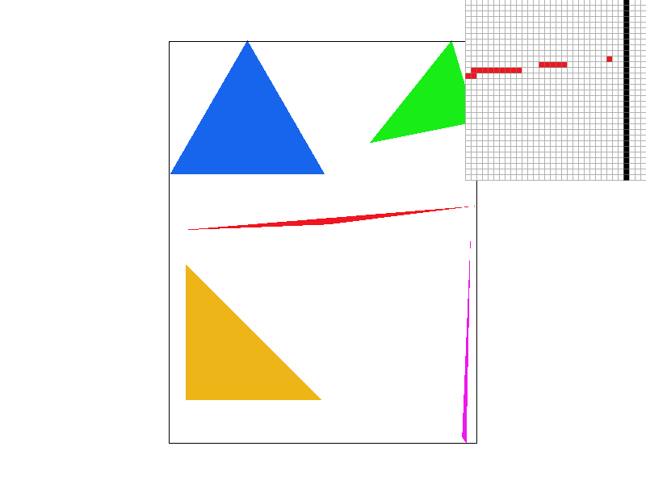
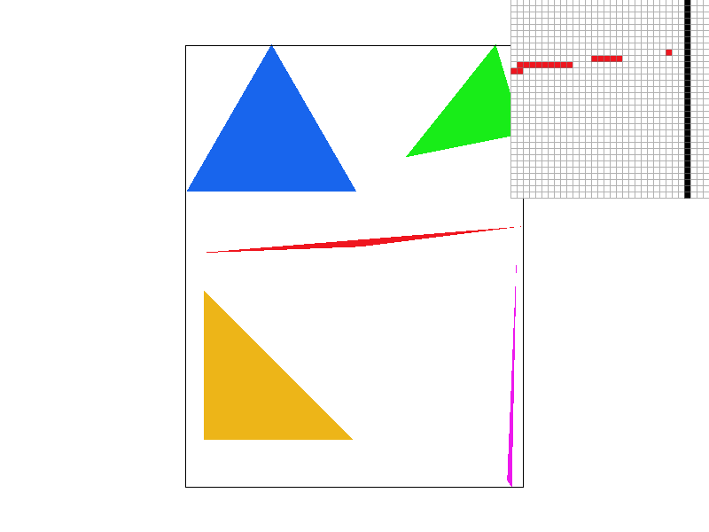
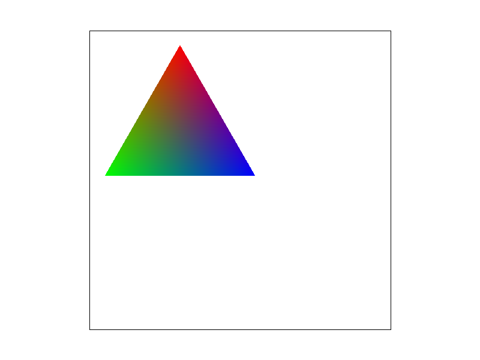
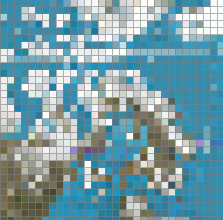
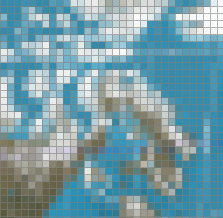
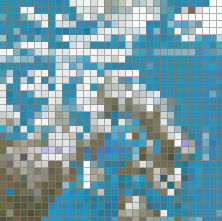
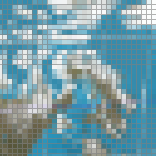
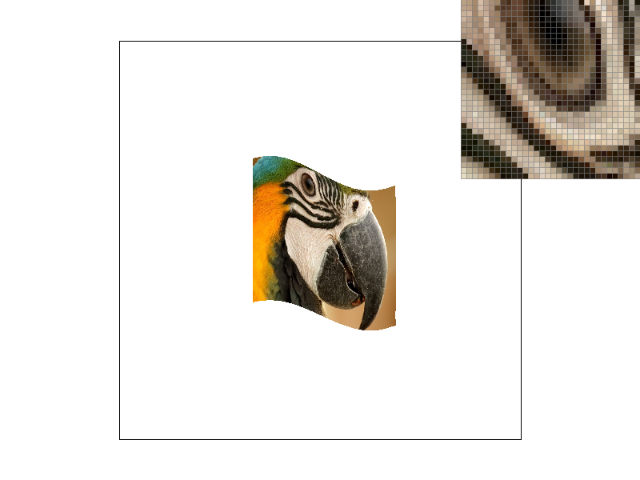
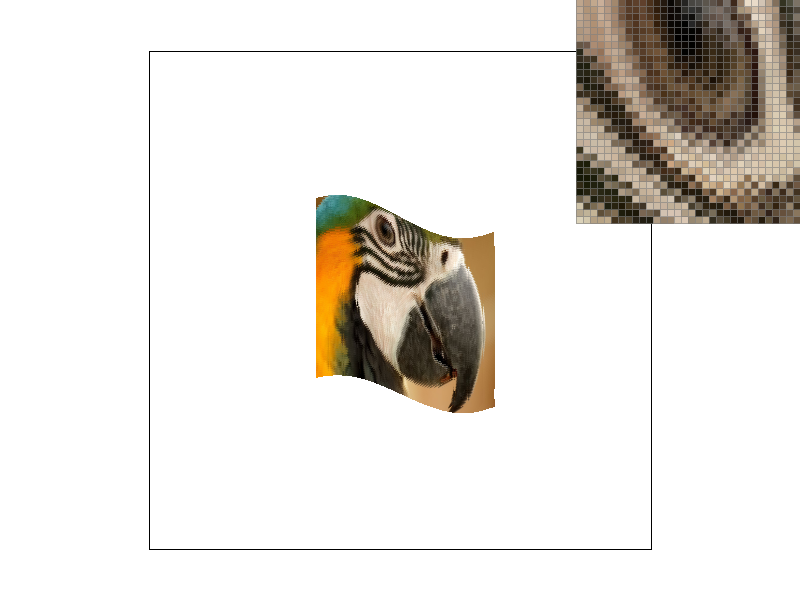

My process for rasterizing triangles was to first find the bounding box of the triangle from the min/max x,y coordinates.
Then I iterated over every pixel in the bounding box and checked if it was inside the triangle. If it was, I colored it the coresponding color.
To check if a point was inside the triangle, I used the signed distance formula covered in class which gave the signed distance of a point from a line.
If the signs of the distance of the query point to the sides of the triangle were all the same, this meant the point was inside the triangle.
The signs would either all be positive or all be negative depending on the orientation of the triangle points given.
Inside the code, I called my signed distance function ccw() because it returns a positive value if the three points supplied form a counterclockwise path.
Here is a picture of test4

My supersampling algorithm expanded upon my original rasterizing algorithm in part 1 by sampling "sample_rate" datapoints inside the query pixel.
My algorithm distributes these "sample_rate" points inside the pixel region by evenly spacing them in a sqrt(sample_rate) by sqrt(sample_rate) grid.
In case the sample_rate was not a perfect square, I rounded sqrt(sample_rate) up.
This would cause too many sample points so I then removed the extraneous sample points from the bottom of the grid until exactly sample_rate points were used.
I used the center of the square for the sample location.
The datastructure I used to store the samples was a vector of size width*height*sample_rate.
To create the final buffer of size width*height, I took the average color across sample_rate points.
The result of this was smoother edges for triangles. Especially thin ones.
Supersampling is useful because it creates less grainy images and produces pixel values more representative of the actual image.
It accomplishes this by sampling more data points, hence the name supersampling.
Here are screenshots of basic/test-4.svg at sample rates 1,4, and 16.
| Sample Rate = 1 | Sample Rate = 4 | Sample Rate = 16 |
|---|---|---|
|  |
The higher the sample rate, the smoother the triangle. This is because at lower sample rates, the sampled point can someimtes land inside the triangle and sometimes outside, resulting in discontinous coloring. Taking multiple samples and averaging yields better results.
Here is a robot performing yoga.
Given a reference triangle, Barycentric coordinates are a coordinate system where a point's location its relative position to the three vertices of the triangle, given as a triplet of (alpha, beta, gamma).
There are multiple interpretaitons of (alpha, beta, gamma).
For example, (alpha, beta, gamma) could represent the weights needed to place on the vertices of the triangle such that the center of mass is at the specified location.
Alpha, beta, and gamma are defined to sum to 1 in Barycentric coordinates.
One use of Barycentric coordinates is that they are an easy way to interpolate the positions of points inside a triangle after a transformation.
Assuming the triangle is stretched/squeezed relatively uniformly across its interior, we would only need to calculate the transformed locations of the vertices
and then use Barycnetric coordinates to interpolate for all the points inside the triangle. This works well in rasterization when the triangles are small. When the
triangles are large, distortions become more evident.
An example of the use of Barycentric coordinates is shown below. given the color values of the vertices of a triangle, we can interpolate intermediate values of colors within the triangle.

Pixel sampling is the process of determing the color of a pixel by sampling points from a function or image.
I used pixel sampling on a texture image to implement texture mapping.
This was accomplished by having each triangle in the svg have a corresponding triangle in the texture image.
To determine what colors the pixels within the triangle should be colored,
I used the Barycentric coordinates to determine what location a point would land inside the texture space.
I then sampled the texture image around that location for the color value.
I implemented two kinds of sampling: nearest neighbor, and bilinear.
Nearest neighbor involved using the nearest texel as the color value a pixel should be colored.
Bilinear is similar but averages the closests 4 texels weighted by how close the texel is to the sample location.
Here is a comparison of the results I had rasterizing with bilinear and nearest pixel sampling.
| 1 sample per pixel | 16 samples per pixel | |
|---|---|---|
| Nearest Point |  |  |
| Bilinear |  |  |
The nearest point images are more grainy and have sudden sudden light and dark squares. This is a little difficult to see but is definitely noticeable when the images are directly overlayed on one another. At higher sample rates, the two sampling methods produce similar results. There will be a large difference between the methods when there are high frequencies in the image and the sample rate is low. In otherwords, there will be a difference when high frequencies get aliased as low frequency signals. Bilinear sampling will smooth out the fluctuations while nearest sampling may give grainy results.
Level sampling is process of storing an image at multiple resolutions and sampling from a corresponding one to produce better pixel samples.
Each resolution is called a layer and each layer has its dimensions halved from the previous layer.
This is technique is beneficial in texture mapping because in texture mapping,
a pixel in the image space can cover a much larger or smaller region in the texture space.
For example, if the pixel covers a much larger space, then naively sampling the texture space region may produce grainy results.
However, if we sample from lower resolution image, each pixel we sample is an average of many pixels already.
This is effectifely anti-aliasing and can be efficiently precompute before sampling.
If the transformed pixel is smaller, then I use Bilinear smapling since the transformed pixel lies between texels.
Increasing the sample rate gives the best anti-aliasing but it is also the most costly in memory and speed. Pixel sampling and Level sampling give similar results. Pixel sampling handles higher frequencies poorer than level sampling. But level sampling can give blurry pictures by anti-aliasing too much. Level sampling will consume less memory and is faster than point sampling.
Here is a comparison of the results I got for level sampling vs. point sampling
| 1 sample per pixel | 16 samples per pixel | |
|---|---|---|
| Nearest Point |  | |
| Bilinear |  |
 |
Level Sampling can produce more blurry results which I presume is due to over anti-aliasing.